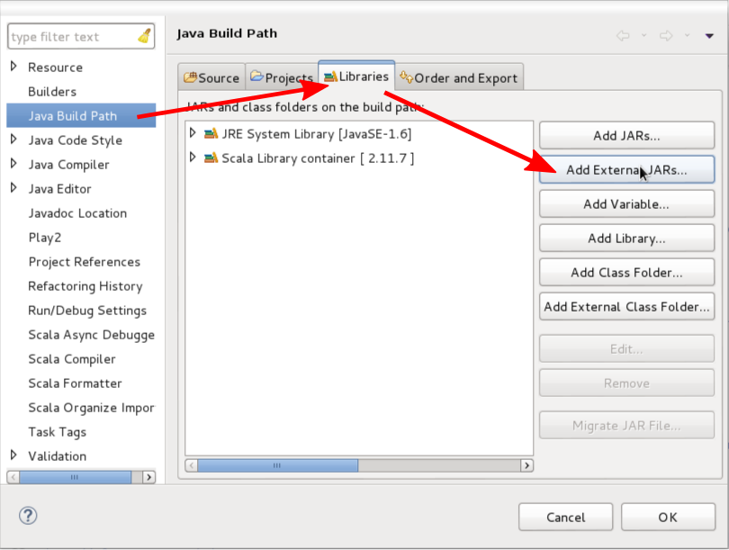
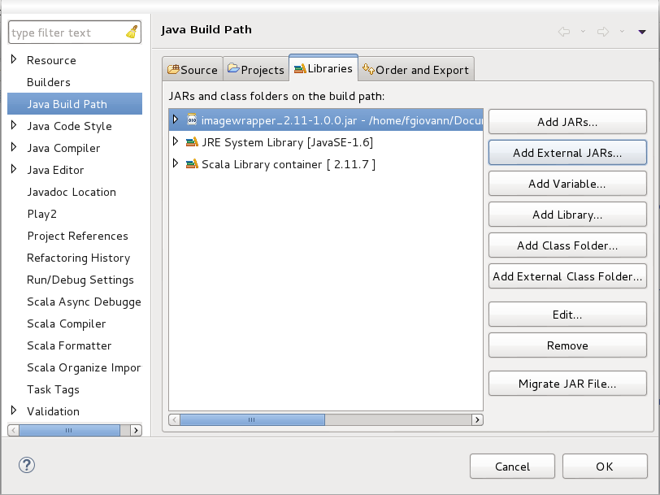

TOP project: Music detection
On this website, you will find information about installing and using the API we provide for this project.
If you have any question, do not hesitate to ask a member of the TOP teaching staff.
Installing the API
This section is based on the previous installation guidelines by Francesco Giovannini.
Scala version
This library has been tested with the Scala version 2.11. To make sure the correct Scala version is installed on your computer, please run the following command in a terminal:
scala -version
Installation on ScalaIDE
The objective is to add the compiled JAR file of the library to the Java Build Path of your project.
-
Right click on your project -> Build Path ->
Configure Build Path. The following dialog opens:
 - Go to Java Build Path, in the Library tab and click on the Add external JARs... button.
-
In the newly opened dialog, navigate to the folder where the JAR file of the library is located, select it and
validate the dialog. The result should look like this:
 - Click on OK to validate the configuration.
Wav Wrapper
The WavWrapper represents a wrapper class for wav objects.
The path of the wav file (filePath) has to be a .wav file.
The wav is represented as an array of arrays of int.
The first array contains the sample rate, the number of channels and the number of frames.
Each one of the next arrays represents a channel and contains integers representing the amplitude at each frame.
// Imports the API library
import com.tncy.top.files.WavWrapper;
// Source wav file
var filePath : String = "sampleMusic.wav";
// Loads wrapped wav
var wrappedWav : WavWrapper = new WavWrapper(filePath);
// Gets the music content
var wav2D : Array[Array[Int]] = wrappedWav.getWav();
// Prints the wav's sample rate, number of channels and number of frames
println("The music's sample rate is: " + wav2D(0)(0) + " frames per second.");
println("The music's number of channels is: " + wav2D(0)(1) + " channels.");
println("The music's number of frames is: " + wav2D(0)(2) + " frames.");
Utils / listFiles
The Utils class provides the function listFiles, which lists the files and folders of a directory.
Its argument, the path of the directory (directoryPath), can be a relative or an absolute path.
The returned value is an array of Strings containing the name (and not the path) of each file or folder in the directory. If the directory does not exist, the function returns an empty array.
// Imports the API library
import com.tncy.top.files.Utils;
// Directory path
var directoryPath : String = "MusicsDirectoryPath";
// Gets the array of files and folders
var files : Array[String] = Utils.listFiles(directoryPath);
// Prints the name of the first file or folder of the directory, and its path
if (files.length > 0){
println("The first file's name is : " + files(0) + " and its path is " + directoryPath + "/" + files(0));
}